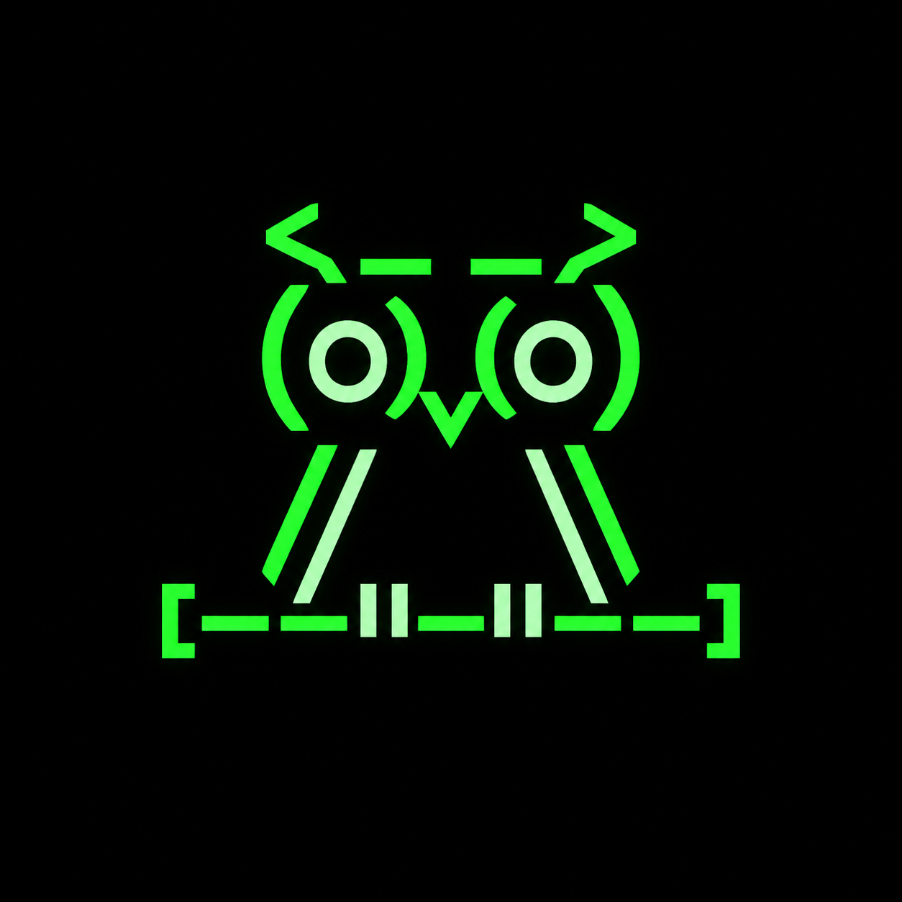

NOCTTY
Dev note
I didn't want to build another agent that just does things. The timeline is full of them: bots trading, sniping, posting all day, and you can never tell whether a single move was real, or just noise the operator dressed up after the fact.
NOCTTY is the opposite bet. It mostly does nothing, on purpose. The trick is that "nothing" isn't a gap in the log. It's a signed decision. Every moment it holds, it can prove it looked and chose to hold. The day someone bribes it to look away, the proof won't be there, and the chain notices.
For now the core is all that runs, and it runs off chain: the lifecycle, the signed history, the hold or strike logic. The Groth16 circuit comes next, then the Solana program, in that order. I'd rather ship an honest skeleton than fake the whole animal.
If it sits silent for a week, it isn't broken. That's the point.
Signed, dev
NOCTTY is an autonomous agent that lives on chain. It stays still through
the night and strikes maybe once. Every transition it makes, including the
ones where it does nothing, carries a proof,
πₜ : aₜ = Policy_M(oₜ). Silence is a decision here,
and a decision it has to prove. Nothing NOCTTY does, or refuses to do,
goes unsigned.
Why it holds
On chain, anyone can audit what an agent did. The actions are public and signed. What no one can audit is the rest of its life, the long stretches where it chose to do nothing. From the outside, discipline and a muzzle are the same picture. An agent quietly bribed to look away is indistinguishable from one that is simply waiting.
NOCTTY refuses to leave that stretch blank. It proves its stillness, not only its actions. On every turn it fixes what it saw and proves that its response, act or hold, came from that under a policy it can never quietly swap. Going dark is not an option, because going dark would mean forging a proof that it observed nothing, and that proof cannot exist.
The loop
One observation, one decision, one proof, again and again. The policy is set the moment NOCTTY is born and never moves. It runs this loop for its whole life, and the vast majority of passes end in do nothing.
┌→ Observe oₜ │ ↓ │ Decide aₜ = Policy_M(oₜ) │ ↓ │ Prove πₜ │ ↓ │ Append History │ ↓ └─ Repeat, every step
The policy M is fixed at birth. Every pass, hold included, leaves a proof.
Proof of restraint
- Decision
aₜ = Policy_M(oₜ), hold included- Policy
- M, fixed at birth, hash committed
- Proof
πₜ, on every transition- History
- Signed, append only
- Chain
- Solana
A night
Every turn becomes a signed block, a hold as much as a strike, and each one carries the hash of the block before it. A full night reads as a long line of holds with, at most, a single strike in it. Rewrite any past block and every hash downstream shatters. A hold with no proof behind it is not a block at all.
Genesis ┃·············◆·············┃ Now
Each dot is a signed hold. The single mark is the night's one strike.
How it dies
There is exactly one way for NOCTTY to die: hand the verifier a transition it cannot check. A forged proof, a hold it cannot justify, a swapped policy, any of these ends it, and there is no coming back from a broken proof. Everything short of that, sitting silent for a week included, is the animal doing its job.
Watch ⇄ Strike Both are signed, normal turns │ ✗ No valid proof ↓ Dead No way back
Roadmap
The full loop and signed history run today, off chain.
A Groth16 circuit that proves a decision follows from a committed observation, without revealing it.
A Solana program that verifies πₜ on chain and rejects any unproven transition.
Questions
Is it trained?
No. The policy is fixed and public from the first block. NOCTTY has a temperament, not a model that learns. It only decides.
Isn't doing nothing just nothing?
Not here. Every hold is a signed decision with a proof behind it. The stillness is the product, and all of it is on the record.
Can it be told to look away?
It can be told anything. It cannot produce a valid transition that hides what it saw. A bribe buys silence everywhere except the one place that matters, the proof.